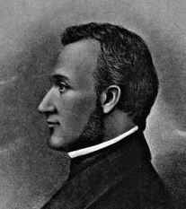
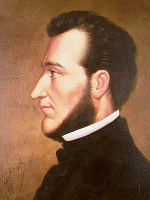
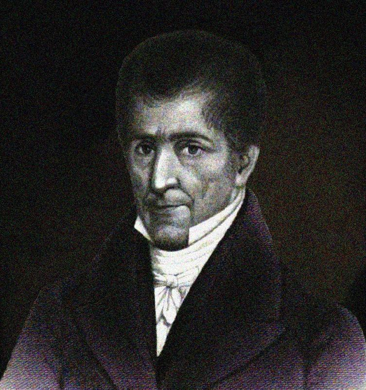
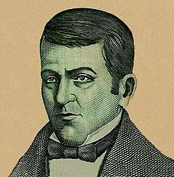
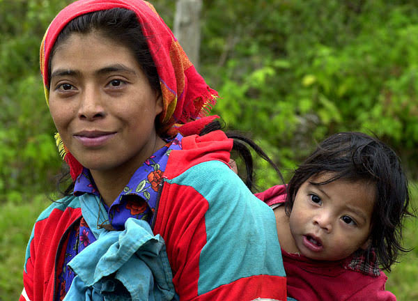
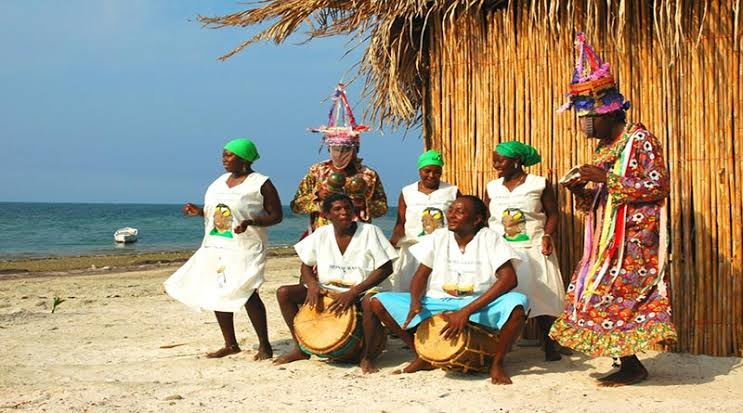
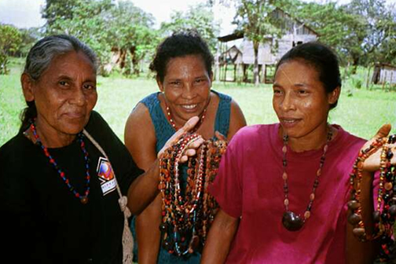
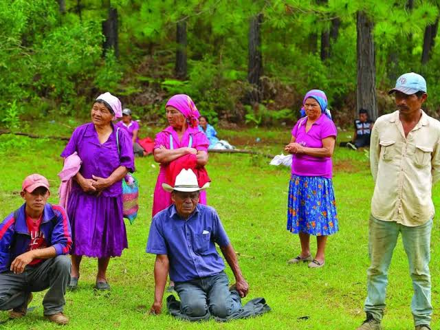
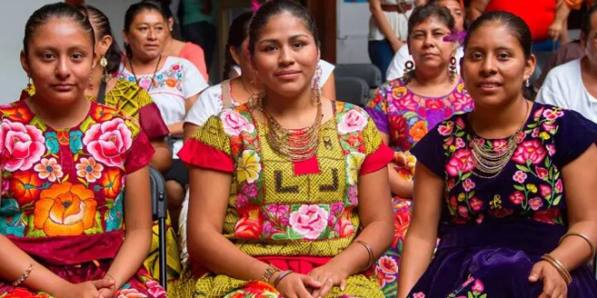

Cultura
¿Quieres conocer mas sobre Honduras?
Nuestra Identidad
Honduras es un país lleno de historia, tradiciones y diversidad cultural. Su identidad se ha formado a través de las generaciones y reúne las costumbres de diferentes pueblos que han dejado una importante huella en nuestro país.
Desde sus pueblos originarios hasta sus tradiciones actuales, cada región de Honduras tiene algo especial que contar.
Epoca Prehispanica
Antes de la llegada de los españoles, el territorio hondureño estaba habitado por diferentes pueblos indígenas. Entre ellos destacaron los mayas, lencas, pech, tolupanes y otros grupos.
Llegada de los españoles
En el siglo XVI comenzó el proceso de conquista y colonización española, dando inicio a importantes cambios sociales, culturales y económicos.
Epoca Prehispanica
Antes de la llegada de los españoles, el territorio hondureño estaba habitado por diferentes pueblos indígenas. Entre ellos destacaron los mayas, lencas, pech, tolupanes y otros grupos.
Independencia
El 15 de septiembre de 1821, Centroamérica declaró su independencia del dominio español. Este acontecimiento marcó el inicio de una nueva etapa para Honduras.
Honduras Actual
Actualmente Honduras conserva muchas de sus tradiciones y expresiones culturales, combinando sus raíces históricas con nuevas formas de arte, música, gastronomía y celebración.

Francisco Morazan
Francisco Morazán fue uno de los personajes más importantes de la historia de Centroamérica. Nació en Tegucigalpa en 1792 y tuvo una destacada participación política y militar.
Fue presidente de la República Federal de Centroamérica y defendió ideales de unión, educación y progreso para los pueblos centroamericanos.
Su legado continúa siendo recordado en Honduras y en otros países de Centroamérica.
Proceres de Honduras
Honduras reconoce a diferentes personajes que tuvieron una participación importante en la historia y en el proceso de independencia de Centroamérica.

Francisco Morazan
Líder político y militar centroamericano que defendió la unión de Centroamérica.

Jose Cecilio del valle
Intelectual, político y uno de los personajes relacionados con la independencia de Centroamérica.

Dionisio de Herrera
Político y abogado hondureño considerado una figura importante de los primeros años de la nación.
Pueblos y etnias de Honduras
Honduras posee una gran diversidad cultural. Sus pueblos originarios y comunidades han conservado tradiciones, lenguas, conocimientos y costumbres que forman parte de nuestra identidad.

Lencas
> Pueblo indígena con una importante presencia en el occidente y centro de Honduras. Se caracteriza por sus tradiciones, artesanías y expresiones culturales.

Garifuna
> Pueblo reconocido por su música, danza, gastronomía y tradiciones. Su cultura tiene una importante presencia en la costa caribeña de Honduras.

Miskito
> Pueblo indígena principalmente establecido en la región de La Mosquitia, con una rica tradición cultural y conocimientos relacionados con su entorno natural.

Pech
> Pueblo indígena que conserva tradiciones, conocimientos ancestrales y una estrecha relación con la naturaleza.

Tolupan
> Pueblo originario de Honduras que conserva importantes tradiciones y conocimientos transmitidos de generación en generación.